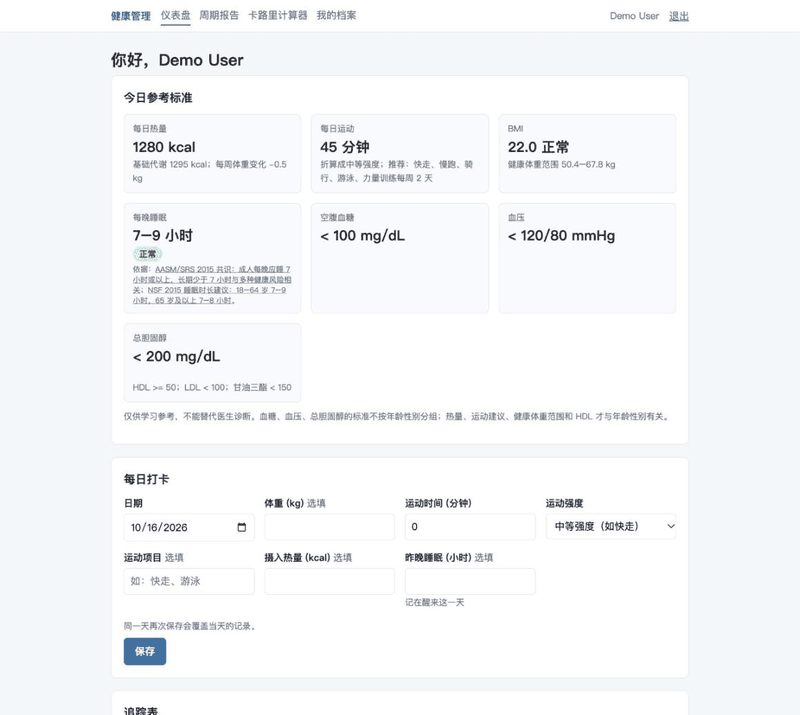
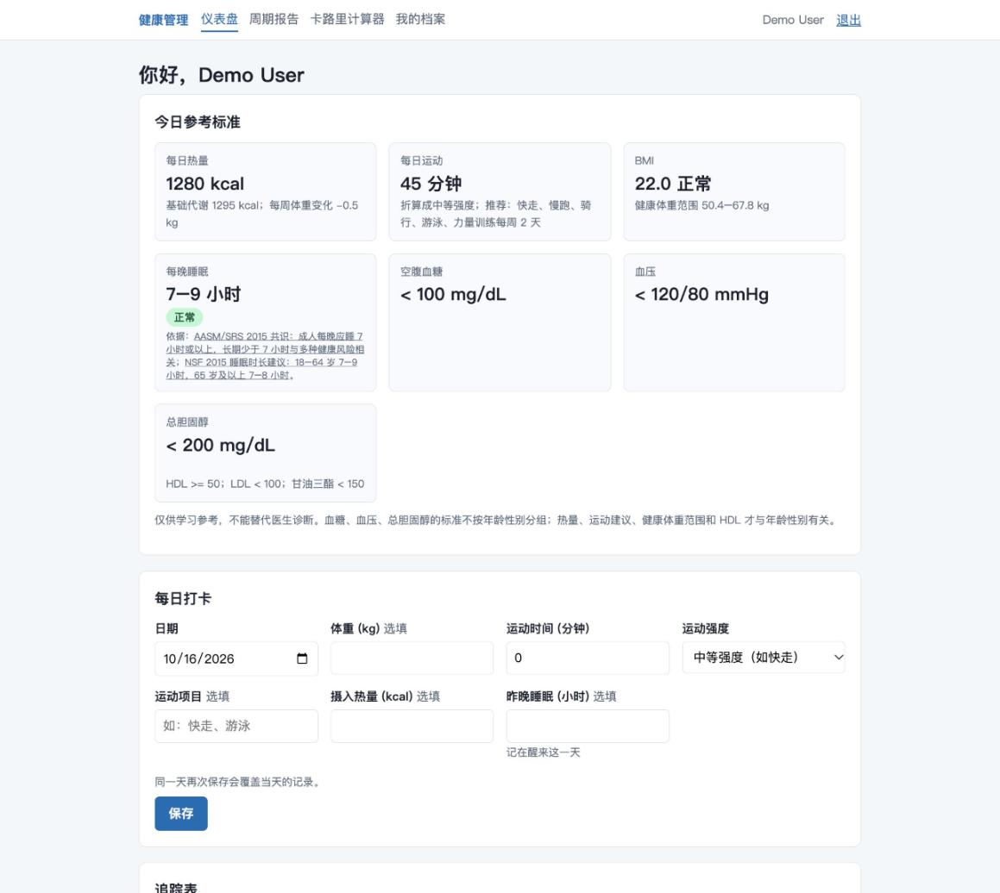
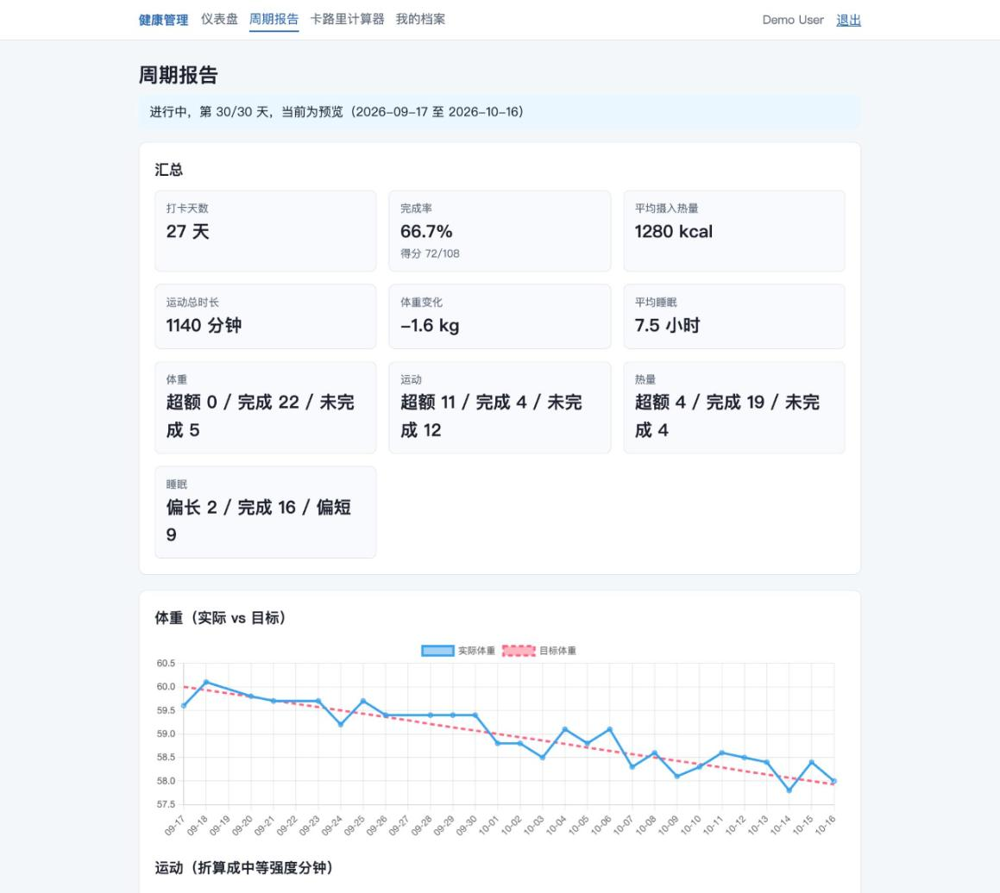
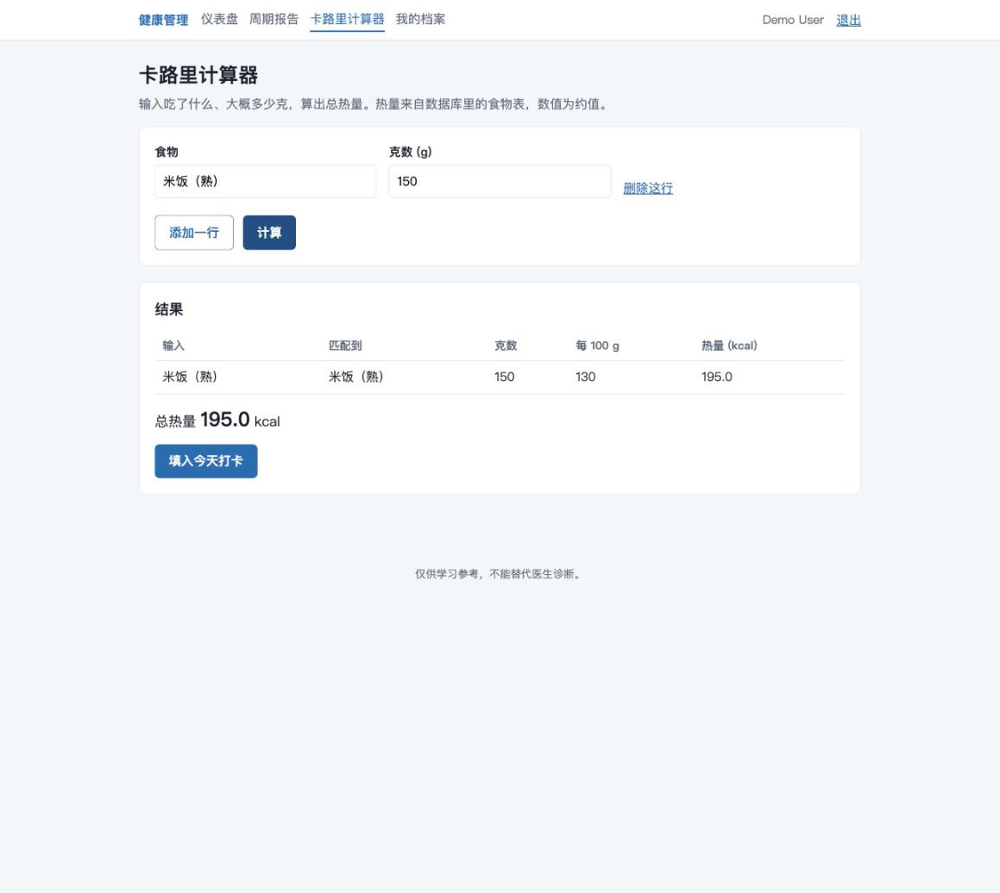

健康管理 Health Management
一个能根据年龄、性别和目标给出每日参考标准，并记录打卡、生成周期报告的网站。
A web app that gives daily reference targets by age, gender and goal, tracks check-ins and builds cycle reports.
演示 / Demo

功能 / Features
- 每日参考标准：热量、运动、BMI 与健康体重范围、睡眠、血糖、血压、胆固醇，并附依据来源。
Daily targets for calories, exercise, BMI, sleep, glucose, blood pressure and cholesterol, with cited sources. - 每日打卡与评分：体重、运动、热量、睡眠四项，按目标判断「完成 / 超额 / 未完成」。
Daily check-in scored on weight, exercise, calories and sleep. - 周期报告：汇总、完成率，以及体重 / 运动 / 热量 / 睡眠的 Chart.js 曲线（实际 vs 目标）。
Cycle report with totals, completion rate and charts of actual vs target. - 卡路里计算器：输入食物和克数，支持别名与模糊匹配、候选下拉、歧义时让用户选择，结果可一键填入打卡。
Calorie calculator with alias / fuzzy matching, suggestions, disambiguation, and one-click fill into the check-in.
截图 / Screenshots



技术 / Tech
- 后端 Back end：FastAPI、SQLAlchemy、SQLite、Pydantic；评分和标准是纯函数，约 170 个自动化测试。
- 前端 Front end：原生 HTML / CSS / JavaScript，Chart.js。
- 两个独立服务：User-management-service（用户与登录）+ health-service（档案、打卡、报告、计算器）。
本机运行 / Run locally
这是一个本机运行的学习项目，这个页面只是介绍，没有连接后端。完整步骤见 README。
This is a learning project that runs locally; this page is a static introduction with no back end. See the README for setup.